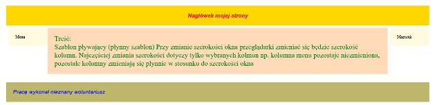
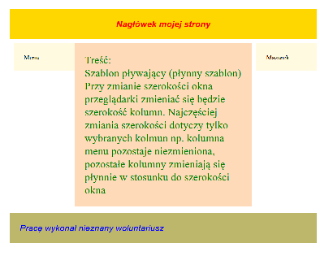

Menu
Treść:
Szablon pływający (płynny szablon) Przy zmianie szerokości okna przeglądarki zmieniać się będzie szerokość kolumn. Najczęściej zmiania szerokości dotyczy tylko wybranych kolmun np. kolumna menu pozostaje niezmieniona, pozostałe kolumny zmieniają się płynnie w stosunku do szerokości okna  